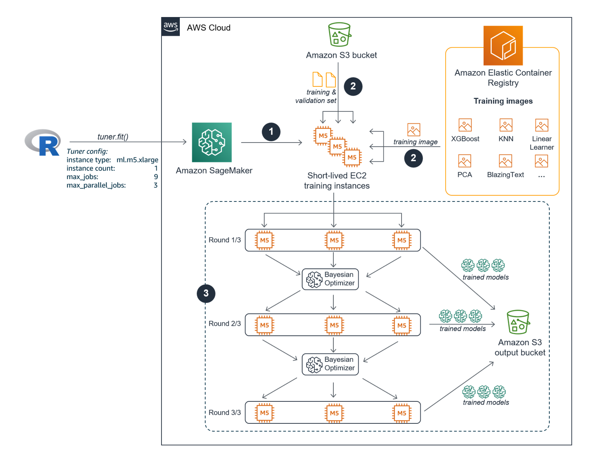
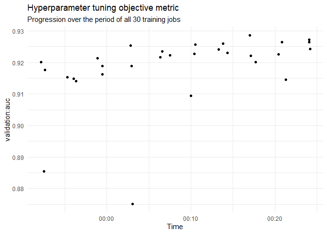
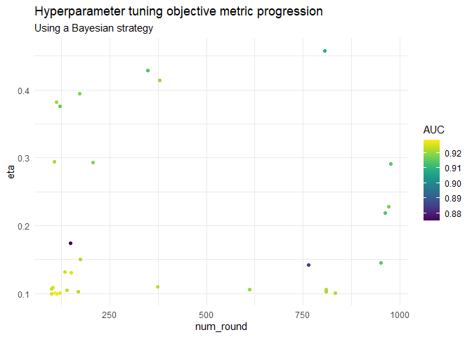
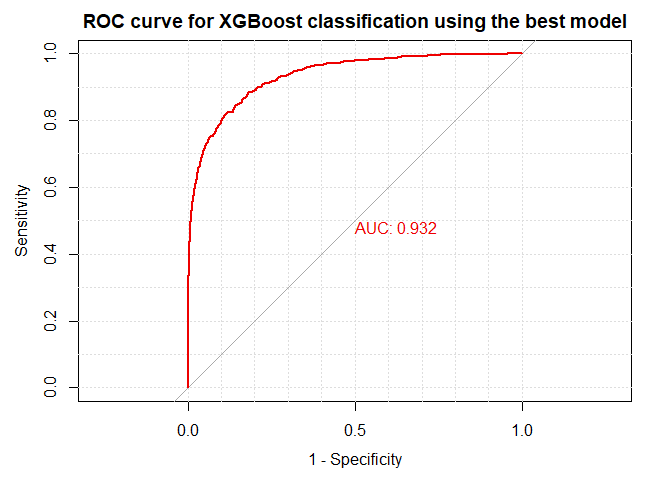

SageMaker fundamentals for R users - 03: Hyperparameter tuning
The SageMaker Fundamentals for R users article series is for experienced R users with no prior Amazon SageMaker knowledge, who want to use their own (local) RStudio installation as an alternative to SageMaker Notebooks to connect to SageMaker to train, tune, evaluate, deploy and monitor machine learning models in the cloud.
In the last article of the series 02 - Training a model with a built-in algorithm we showed how to configure and start a single training job with static hyperparameters using the built-in XGBoost algorithm to solve a binary classification problem. Single training jobs in SageMaker cannot include tunable hyperparameters.
In this third article of the series we will continue to use the hotels example project. This time you will learn how to configure and start a hyperparameter tuning job with static and tunable hyperparameters using the built-in XGBoost algorithm. Typically, a hyperparameter tuning job executes multiple training jobs. Along the way we have a closer look at the underlying mechanisms of SageMaker hyperparameter tuning jobs.
The entire code of this article is also part of a self-paced and fully reproducible workshop that you can download from GitHub here.
Introduction
We assume that you read the previous article on training a single model with the built-in XGBoost algorithm and that you you uploaded the pre-processed training, validation and test datasets to S3 having followed the defined path and folder structure. We won’t repeat the data exploration steps here but focus on configuring and starting a hyperparameter tuning job based on the preprocessed and uploaded data.
Load necessary libraries
To use code in this article, you will need to install and load the following packages:
library(reticulate) # for calling the SageMaker Python SDK from R
library(purrr) # for parsing the SageMaker responses
library(dplyr) # for processing the SageMaker responses
library(ggplot2) # for visualizing the tuning job results
library(viridis) # provides color palettes that are easy to read by those with colorblindness
library(readr) # for reading the test set from disk
library(pROC) # for the evaluation of the final model performance
library(caret) # for the evaluation of the final model performance
Preparation
We activate the conda environment we prepared and set up in the first article 01 - Connecting RStudio to SageMaker to connect to SageMaker from your RStudio environment.
We import the SageMaker Python module and create a session object which provides convenient methods for manipulating entities and resources that Amazon SageMaker uses, such as training jobs, endpoints, and input data sets in S3.
use_condaenv("sagemaker-r", required = TRUE)
sagemaker <- import("sagemaker")
session <- sagemaker$Session()
Calling default_bucket() on the SageMaker session object returns the name of the default SageMaker bucket we created during the initial setup in the first article of this series. We choose hotels as our project name and we further specify the S3 data and models paths we also used earlier.
bucket <- session$default_bucket()
project <- "hotels"
data_path <- paste0(project, "/", "data")
models_path <- paste0("s3://", bucket, "/", project, "/", "models")
Next, we retrieve the paths to the datasets we uploaded to S3 in the second article. We need this information later when telling SageMaker where to fetch the data from when starting the hyperparameter tuning job and the inference job.
data_s3_location <- session$list_s3_files(bucket, data_path)
data_s3_location
## [1] "hotels/data/hotels_test.csv" "hotels/data/hotels_training.csv"
## [3] "hotels/data/hotels_validation.csv"
s3_train <- paste0("s3://", bucket, "/", "hotels/data/hotels_training.csv")
s3_validation <- paste0("s3://", bucket, "/", "hotels/data/hotels_validation.csv")
s3_test <- paste0("s3://", bucket, "/", "hotels/data/hotels_test.csv")
Training and tuning the machine model
In this section we first examine the underlying mechanisms of SageMaker hyperparameter tuning jobs before configuring and starting a tuning job based on the data from the hotels project.
The SageMaker hyperparameter tuning process
In regards to the underlying infrastructure provisioning, the hyperparameter tuning process in SageMaker is very similar to the training process for a single model we covered in 02 - Training a model with a built-in algorithm.
Every hyperparameter tuning job has its own short-lived EC2 training cluster. The cluster consists of one or more EC2 instances, whose type and number you specify. The EC2 training cluster is only live for the number of seconds the models are trained and will come down immediately after the hyperparameter tuning job is finished.
The three major differences between single training jobs and hyperparameter tuning jobs are the following:
- A hyperparameter tuning job is defined by specifying static AND tunable hyperparameters.
- A hyperparameter tuning job will execute MULTIPLE training jobs while searching for the optimal values of the tunable hyperparameters. The search for the optimal hyperparameters depends on the defined tuning method (aka optimization algorithm).
- Hyperparameter tuning jobs are defined using an Estimator object AND a HyperparameterTuner object. The HyperparameterTuner object starts the hyperparameter tuning job.
SageMaker supports two tuning methods: Bayesian optimization which is the default tuning method and random search. Grid search that you might be familiar with from using the caret or the mlr package is not supported by SageMaker. In this article we will use Bayesian optimization as the tuning method.
The image below shows the different steps of a hyperparameter tuning job in more detail.

A hyperparameter job is started calling the fit() function via the API. The following parameters which you pass to fit() as part of the job configuration will determine the infrastructure setup of the short-lived training cluster:
instance_typeandinstance count: Define the type of the EC2 instance and the number of EC2 instances used for a single training job as part of the hyperparameter tuning process.max_jobs: Determines the maximum number of training jobs that will be executed.max_parallel_job: The number of training jobs that will be executed in parallel.
Info
Since each training job requires
instance_countnumber of instances, the number of instances running concurrently is equal toinstance_countmultipled bymax_parallel_job.
SageMaker executes the following steps automatically once a hyperparameter job is started calling fit():
-
The new EC2 training cluster comes online. In the example in the image the hyperparameter tuning job configuration defines one ml.m5.xlarge instance (
instance_type = "ml.m5.xlarge,instance_count = 1) for a SINGLE training job. Because we decide to execute three training jobs in parallel per tuning round (max_parallel_jobs = 3), the short-lived training cluster will be started with 3 ml.m5.xlarge EC2 instances. -
The Docker container training image from the SageMaker built-in algorithm that lives in the Elastic Container Registry (ECR) is pulled into EVERY training instance of the training cluster AND the training and validation data sets are transferred from the specified Amazon S3 bucket to EVERY training instance of the training cluster.
-
Because we specified to run nine training jobs in total (
max_jobs = 9) with three training jobs executed in parallel (max_parallel = 3), we will have three training rounds. Every round each of our three ml.m5.xlarge EC2 instances will be fed with a different hyperparameter setting.- Round 1/3: Three training jobs are executed with each job using a different hyperparameter setting. After the three training jobs finish, the trained machine learning models are stored in a S3 bucket. In addition, the results of the objective metric performance (e.g. AUC scores of the validation test sets in case of a binary classification problem) are pulled into the Bayesian optimizer.
- Round 2/3: The Bayesian optimizer starts three new training jobs with each job using a new hyperparameter setting. After the three training jobs finish, the trained machine learning models are stored in a S3 bucket. In addition, the results of the objective metric performance are pulled into the Bayesian optimizer.
- Round 3/3: The Bayesian optimizer starts the final round with three new training jobs and each job using a new hyperparameter setting. After the three training jobs finish, the trained machine learning models are stored in a S3 bucket. The short-lived training cluster is shut down.
Having gained a solid understanding of the underlying fundamentals of SageMaker hyperparameter tuning jobs, we will now configure and start a tuning job ourselves.
Step 1 - Create an Estimator object
The first of two essential objects for hyperparameter tuning on SageMaker via the API is an Estimator object.
Info
An Estimator object specifies the core components for single training jobs that are part of a hyperparameter tuning job:
- The type and the number of EC2 instance for the training job.
- The location of the ML algorithm docker container image in the Elastic Container Registry.
- The static hyperparameters that won’t be tuned during the training job.
- The learning objective.
Note: Unlike for single training jobs, the evaluation metric for the validation data set won’t be defined in the Estimator object but in the HyperparameterTuner object later.
We create our own Estimator instance, specifying the following parameters in the constructor:
image_name: The location of the SageMaker built-in XGBoost algorithm docker container image in the Elastic Container Registry (ECR). We will use XGBoost version 1.0-1.role: The AWS Identity and Access Management (IAM) role that SageMaker can assume to perform tasks on your behalf like, e.g., fetching data from Amazon S3 buckets and writing the trained model artifacts back to Amazon S3. This is the role we set up and whose Amazon Resource Name (ARN) we stored as a R environment variable in 01 - Connecting RStudio to SageMaker.train_instance_countandtrain_instance_type: The type and number of EC2 instances that together represent a training instance of our training cluster to execute a SINGLE training job. We use two ml.m5.4xlarge instances.train_volume_size: The size, in GB, of the Amazon Elastic Block Store (Amazon EBS) storage volume to attach to the training instance. It is recommended that you have enough total memory in the selected EC2 instances to hold the training data.output_path: The path to the S3 bucket where Amazon SageMaker stores the training results.sagemaker_session: The session object that manages interactions with Amazon SageMaker APIs and any other AWS service that the training job uses.
region <- session$boto_region_name
# get container image location
container <- sagemaker$image_uris$retrieve(framework = "xgboost",
region = region,
version = "1.0-1" )
# get SageMaker execution role stored in .Renviron
role_arn <- Sys.getenv("SAGEMAKER_ROLE_ARN")
# Create an Estimator object
xgb_estimator <- sagemaker$estimator$Estimator(
image_uri = container,
role = role_arn,
instance_count = 1L,
instance_type = "ml.m5.12xlarge",
volume_size = 30L,
max_run = 3600L,
output_path = models_path,
sagemaker_session = session
)
Step 2 - Define the static hyperparameters
Next, we set the static hyperparameters of the XGBoost algorithm that won’t be tuned by calling set_hyperparameters() on the Estimator object:
xgb_estimator$set_hyperparameters(
objective = "binary:logistic",
min_child_weight = 1
)
Step 3 - Define the tunable hyperparameters
Now, it is time to define the hyperparameters that are tuned during the execution of the tuning job.
Info
For every tunable hyperparameter you specify the range of values to search over. Available hyperparameter range types are categorical ranges, integer ranges and continuous ranges.
For integer and continuous hyperparameter ranges you can further specify the scaling type to use to search the range of values.
Available scaling types are auto (default), linear, logarithmic, and reverse logarithmic. Logarithmic scaling only works for ranges that have values greater than 0. When selecting automatic scaling, SageMaker uses log scaling or reverse logarithmic scaling whenever the appropriate choice is clear from the hyperparameter ranges.
hyperparameter_ranges <- list(
num_round = sagemaker$tuner$IntegerParameter(100L, 1000L),
max_depth = sagemaker$tuner$IntegerParameter(1L, 10L),
eta = sagemaker$tuner$ContinuousParameter(00.1, 0.5, "Logarithmic")
)
We go with the default settings for the remaining hyperparameters.
Step 4 - Create an HyperparameterTuner object
Next we create a HyperparameterTuner object which is the second of the two central objects for hyperparameter tuning on SageMaker via the API.
Info
A HyperparameterTuner object specifies the core components of a hyperparameter tuning job:
- The objective metric for evaluating training jobs
- The ranges of the tunable hyperparameters that are searched
- The tuning method (aka optimization algorithm)
- The maximum total number of training jobs to start
- The maximum number of parallel training jobs to start
We create a HyperParameterTuner instance, specifying the following parameters in the constructor:
estimator: The estimator object we created that includes the training job configuration.objective_metric_name: We selectvalidation:auc, the area under the curve calculated for the validation set, as the metric for evaluating the training jobs.hyperparameter_ranges: The list of tunable hyperparameter ranges we specified in the step before.strategy: The tuning method, in this case “Bayesian”.objective_type: The type of the objective metric for evaluating training jobs which is either “Maximum” or “Minimum”. Since our objective metric isvalidation:aucwe set the parameter to “Maximum”.max_jobs: We decide to start 30 training jobs in total.max_parallel_jobs: Three training jobs start in parallel in each round.
tuner <- sagemaker$tuner$HyperparameterTuner(
estimator = xgb_estimator,
objective_metric_name = "validation:auc",
hyperparameter_ranges = hyperparameter_ranges,
strategy = "Bayesian",
objective_type = "Maximize",
max_jobs = 30L,
max_parallel_jobs = 3L
)
Based on the configuration of the Estimator object and the HyperparameterTuner object, we will start 30 training jobs in total with 3 training jobs starting in parallel in each tuning round. We will have 10 rounds in total. The training cluster will be launched with three ml.m5.12xlarge instances with each instance executing 10 training jobs consecutively.
Step 5 - Define the S3 location of the data sets and the tuning job name
There are only two things left we need to specify before we can start the tuning job:
- The S3 location of the training and validation set defined in a single list.
- The tuning job name which we will set up using the [PROJECT_NAME-ALGO_NAME-TIMESTAMP] naming schema.
Note: At the time of writing a tuner job name is restricted to 32 letters.
algo <- "xgb"
timestamp <- format(Sys.time(), "%Y-%m-%d-%H-%M-%S")
job_name <- paste(project, algo, timestamp, sep = "-")
s3_train_input <- sagemaker$inputs$TrainingInput(s3_data = s3_train,
content_type = 'csv')
s3_valid_input <- sagemaker$inputs$TrainingInput(s3_data = s3_validation,
content_type = 'csv')
input_data <- list('train' = s3_train_input,
'validation' = s3_valid_input)
Step 6 - Start the tuning job
Calling fit() on our HyperparameterTuner object will start the tuning process shown in the image in the SageMaker hyperparameter tuning process section. SageMaker fetches the training and the validation set from S3, obtains a built-in XGBoost algorithm docker container image for ML model training from ECR and pulls it into the newly launched EC2 training cluster. All of this happens fully-managed behind the scenes without further interaction with the user.
tuner$fit(inputs = input_data,
job_name = job_name,
wait = FALSE # If set to TRUE, the call will wait until the job completes
)
We can check via the API when the training job is finished. Once it has reached the status Completed you can move ahead to the next section.
session$describe_tuning_job(job_name)[["HyperParameterTuningJobStatus"]]
## [1] "Completed"
Step 7 - Evaluate the tuning job results
Once the last round of training jobs finishes, SageMaker automatically shuts down and terminates our EC2 training cluster. We now check the tuning results by examining the final AUC value of each of the 30 training jobs first.
tuning_job_results <- sagemaker$HyperparameterTuningJobAnalytics(job_name)
tuning_results_df <- tuning_job_results$dataframe()
head(tuning_results_df)[, c(1:4, 6)]
## eta max_depth num_round TrainingJobName
## 1 0.1088321 7 103 hotels-xgb-2020-08-11-23-47-46-030-c2bf60b6
## 2 0.1070945 7 100 hotels-xgb-2020-08-11-23-47-46-029-6df3546c
## 3 0.1002320 9 121 hotels-xgb-2020-08-11-23-47-46-028-edf996bb
## 4 0.1000000 9 112 hotels-xgb-2020-08-11-23-47-46-027-fccfc6cf
## 5 0.1506055 4 174 hotels-xgb-2020-08-11-23-47-46-026-ce6a400b
## 6 0.2183550 9 962 hotels-xgb-2020-08-11-23-47-46-025-7df3b203
## FinalObjectiveValue
## 1 0.92640
## 2 0.92427
## 3 0.92727
## 4 0.92642
## 5 0.92254
## 6 0.91457
We can also plot a time series chart that shows how our objective metric AUC developed over the course of the 30 training jobs based on the underlying tuning orchestrated by the Bayesian optimizer. In the chart you can see that every time three training jobs were started in parallel .
ggplot(tuning_results_df, aes(TrainingEndTime, FinalObjectiveValue)) +
geom_point() +
xlab("Time") +
ylab(tuning_job_results$description()$TrainingJobDefinition$StaticHyperParameters$`_tuning_objective_metric`) +
ggtitle("Hyperparameter tuning objective metric",
"Progression over the period of all 30 training jobs") +
theme_minimal()

In the following chart we plot eta against num_round to show how the Bayesian optimizer focused most of its training jobs on the region of the search space that produced the best models. The color of the dots shows the quality of the corresponding models based on the underlying AUC scores on the validation set. Yellow dots correspond to models with better AUC scores and violet dots indicate a worse AUC.
ggplot(tuning_results_df, aes(num_round, eta)) +
geom_point(aes(color = FinalObjectiveValue)) +
scale_color_viridis("AUC", option = "D") +
ggtitle("Hyperparameter tuning objective metric progression", "Using a Bayesian strategy") +
theme_minimal()

Next, we extract the name of the best training job from the job list and then call describe_training_job() on the session object to get additional information about the best training job:
best_tuned_model <- tuning_results_df %>%
filter(FinalObjectiveValue == max(FinalObjectiveValue)) %>%
pull(TrainingJobName)
best_tuned_model
## [1] "hotels-xgb-2020-08-11-23-47-46-022-b279ccc9"
training_job_stats <- session$describe_training_job(job_name = best_tuned_model)
final_metrics <- map_df(training_job_stats$FinalMetricDataList,
~tibble(metric_name = .x[["MetricName"]],
value = .x[["Value"]]))
final_metrics
## # A tibble: 3 x 2
## metric_name value
## <chr> <dbl>
## 1 validation:auc 0.929
## 2 train:auc 0.987
## 3 ObjectiveMetric 0.929
Final model evaluation
For the final model evaluation we will use the hold-out test set which we also created and uploaded to S3 and follow the exact same procedure we already used for the final evaluation of a single training job described in the last article.
We will use Batch Transform which is a SageMaker feature for generating batch inferences. After that we will use built-in R capabilities to evaluate the results. We won’t explain the details of each step to configure and start a Batch Transform job here. Please refer to 02 - Training a model with a built-in algorithm for an in-depth description.
Step 1 - Create a Transformer object
This time we won’t be able to create the Transformer object by calling transformer() on the Estimator object as shown for single training jobs in the previous article. Instead we use the Transformer constructor and specify the model we like to use to generate the predictions explicitly using the model_name parameter.
For this we need to create a SageMaker model first based on the SageMaker training job by calling create_model_from_job() on the session object. If no model name is specified, the model automatically gets the name of the training job.
predictions_path <- paste0(models_path, "/", best_tuned_model, "/predictions")
session$create_model_from_job(best_tuned_model)
xgb_batch_predictor <- sagemaker$transformer$Transformer(
model_name = best_tuned_model,
instance_count = 1L,
instance_type = "ml.m5.4xlarge",
strategy = "MultiRecord",
assemble_with = "Line",
output_path = predictions_path
)
Step 2 - Start the batch prediction job
We start our batch prediction job by calling transform() on the Transformer object.
xgb_batch_predictor$transform(
data = s3_test,
content_type = 'text/csv',
split_type = "Line",
job_name = best_tuned_model,
wait = FALSE # If set to TRUE, the call will wait until the job completes
)
We can check via the API when the batch prediction job is finished and the inference cluster is shut and terminated. Once it has reached the status Completed you can move ahead to the next section.
session$describe_transform_job(best_tuned_model)[["TransformJobStatus"]]
## [1] "Completed"
Step 3 - Download the test set predictions
Next, we will download the prediction results from S3 and store them as a CSV file locally before reading them into a vector. Then we read the test set we stored in the previous article from disk. We store the predictions with the actual test set outcomes in a new tibble test_results.
s3_downloader <- sagemaker$s3$S3Downloader()
s3_test_predictions_path <- s3_downloader$list(predictions_path)
dir.create("./predictions")
## Warning in dir.create("./predictions"): '.\predictions' already exists
s3_downloader$download(s3_test_predictions_path, "./predictions")
test_predictions <- read_csv("./predictions/hotels_test.csv.out",
col_names = FALSE) %>%
pull(X1)
hotels_test <- read_csv("../data/hotels_test_with_dependent_variable.csv")
test_results <- tibble(
truth = hotels_test$children,
predictions = test_predictions
)
head(test_results)
## # A tibble: 6 x 2
## truth predictions
## <dbl> <dbl>
## 1 0 0.00730
## 2 0 0.0176
## 3 0 0.00478
## 4 0 0.0345
## 5 0 0.0312
## 6 0 0.00824
Step 4 - Evaluate the test set predictions
Let us have a look at the ROC curve and the AUC value of the test data set using the pROC package:
roc_obj <- roc(test_results$truth, test_results$predictions,
plot = TRUE,
grid = TRUE,
print.auc = TRUE,
legacy.axes = TRUE,
main = "ROC curve for XGBoost classification using the best model",
show.thres=TRUE,
col = "red2"
)
## Setting levels: control = 0, case = 1
## Setting direction: controls < cases

Creating a confusion matrix using the caret package we see the following results:
conf_matrix <- confusionMatrix(
factor(ifelse(test_results$predictions >= 0.5, 1, 0), levels = c("0", "1"),
labels = c("no children", "children")),
factor(test_results$truth, levels = c(0, 1),
labels = c("no children", "children")),
positive = "children")
conf_matrix
## Confusion Matrix and Statistics
##
## Reference
## Prediction no children children
## no children 6833 307
## children 60 300
##
## Accuracy : 0.9511
## 95% CI : (0.9459, 0.9558)
## No Information Rate : 0.9191
## P-Value [Acc > NIR] : < 2.2e-16
##
## Kappa : 0.5961
##
## Mcnemar's Test P-Value : < 2.2e-16
##
## Sensitivity : 0.49423
## Specificity : 0.99130
## Pos Pred Value : 0.83333
## Neg Pred Value : 0.95700
## Prevalence : 0.08093
## Detection Rate : 0.04000
## Detection Prevalence : 0.04800
## Balanced Accuracy : 0.74276
##
## 'Positive' Class : children
##
Even though the accuracy for the test set predictions is quite high, the model did not perform that well in identifying the “positive” class (having children). The low sensitivity was expected based on the class imbalance in the original data set which we fairly ignored while preprocessing the data at the beginning. However, the tuned model performed better in every area compared to the model we created based on the single training job in the previous article.
Summary
In this article we explained the underlying mechanisms of SageMaker hyperparameter tuning jobs and showcased how to start tuning jobs using the Estimator object/HyperparameterTuner object combination. We created some plots visualizing the progress and results of the tuning job. Finally, we used a Transformer object to start a batch inference job to make test set predictions using the best model and evaluated the final model performance in R.
In the next article of the series we will have a have a deep dive on model deployment for real-time predictions.